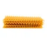
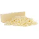
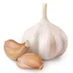
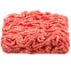
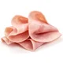
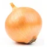
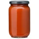
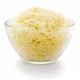

Lasanha de carne moída
A receita de lasanha de carne moída é um prato clássico, muito amado e muito fácil de preparar. Também conhecida como lasanha à bolonhesa, pela sua origem em Bolonha, na Itália, essa receita conquistou o mundo! Este prato é uma verdadeira celebração de sabores, com camadas intercaladas de massa, molho de carne moída e queijo derretido, resultando em uma combinação deliciosa e irresistível! Com ingredientes simples, como carne moída, molho de tomate, queijo, presunto e massa para lasanha, esta receita é uma opção prática e deliciosa para reunir a família ao redor da mesa. A montagem dessa lasanha é um convite ao aroma delicioso que se espalha pela cozinha durante o preparo. Com um toque caseiro e muito sabor, este prato é uma escolha certeira para os amantes de massas e refeições reconfortantes. Surpreenda seus familiares e amigos com esta lasanha clássica e saborosa. Siga o passo a passo dessa receita e descubra como é simples preparar uma lasanha de carne moída que fará sucesso em qualquer ocasião.
Ingredientes (15 porções):
-

500 g de massa de lasanha -
 2 caixas de creme de leite
2 caixas de creme de leite
-
 3 colheres de farinha de trigo
3 colheres de farinha de trigo
-

500 g de mussarela -
 2 copos de leite
2 copos de leite
- 3 colheres de óleo
-

3 dentes de alho amassados -

500 g de carne moída -
 3 colheres de manteiga
3 colheres de manteiga
-

500 g de presunto -
 Sal a gosto
Sal a gosto
-

1 cebola ralada -

1 caixa de molho de tomate -

1 pacote de queijo ralado
Modo de preparo
1. Lasanha
Cozinhe a massa segundo as orientações do fabricante, despeje em um refratário com água gelada para não grudar e reserve.
2. Molho à Bolonhesa
Refogue o alho, a cebola, a carne moída, o molho de tomate, deixe cozinhar por 3 minutos e reserve.
3. Molho Branco
Derreta a margarina, coloque as 3 colheres de farinha de trigo e mexa.
Despeje o leite aos poucos e continue mexendo.
Por último, coloque o creme de leite, mexa por 1 minuto e desligue o fogo.
4. Montagem
Despeje uma parte do molho à bolonhesa em um refratário, a metade da massa, a metade do presunto, a metade da mussarela,
todo o molho branco e o restante da massa.
Repita as camadas até a borda do recipiente.
Finalize com o queijo ralado e leve ao forno alto (220° C), preaquecido, por cerca de 20 minutos.